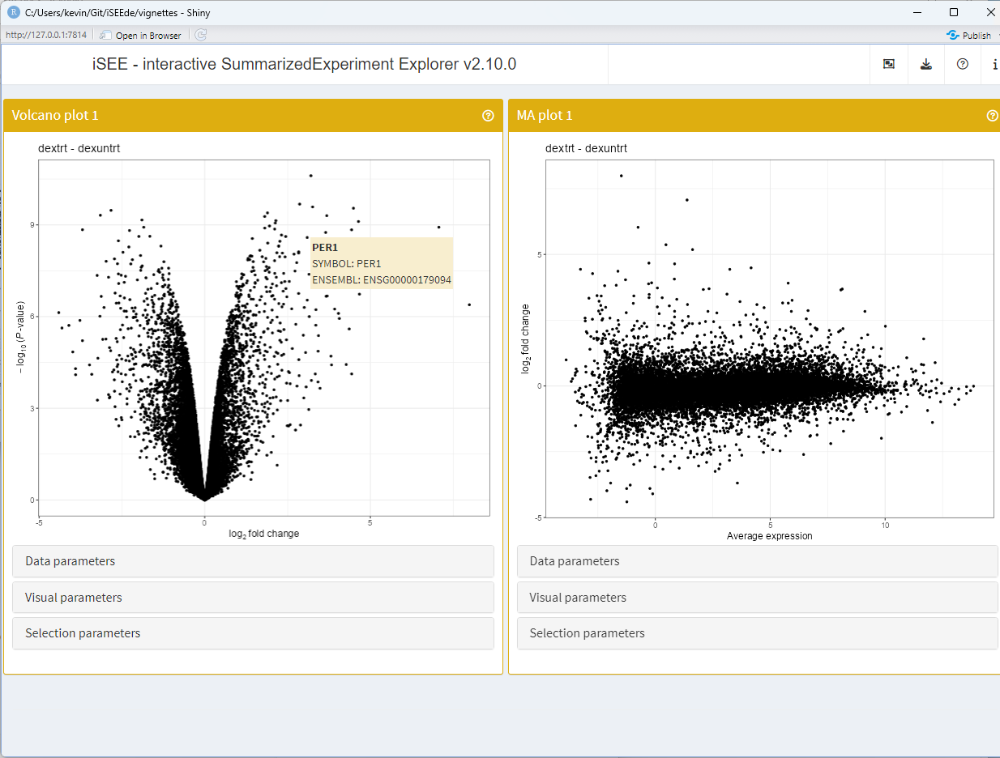

Using annotations to facilitate interactive exploration
Kevin Rue-Albrecht
University of Oxfordkevin.rue-albrecht@imm.ox.ac.uk
22 October 2026
Source:vignettes/annotations.Rmd
annotations.RmdAnnotating data
This section demonstrates one of many possible workflows for adding annotations to the data set. Those annotations are meant to make it easier for users to identify genes of interest, e.g. by displaying both gene symbols and ENSEMBL gene identifiers as tooltips in the interactive browser.
First, we make a copy of the Ensembl identifiers – currently stored
in the rownames() – to a column in the
rowData() component.
Then, we use the org.Hs.eg.db
package to map the Ensembl identifiers to gene symbols. We store those
gene symbols as an additional column of the rowData()
component.
library("org.Hs.eg.db")
rowData(airway)[["SYMBOL"]] <- mapIds(
org.Hs.eg.db, rownames(airway),
"SYMBOL", "ENSEMBL"
)Next, we use the uniquifyFeatureNames() function of the
scuttle
package to replace the rownames() by a unique identifier
that is generated as follows:
- The gene symbol if it is unique.
- A concatenate of the gene symbol and Ensembl gene identifier if the gene symbol is not unique.
- The Ensembl identifier if the gene symbol is not available.
library("scuttle")
rownames(airway) <- uniquifyFeatureNames(
ID = rowData(airway)[["ENSEMBL"]],
names = rowData(airway)[["SYMBOL"]]
)
airway
#> class: RangedSummarizedExperiment
#> dim: 63677 8
#> metadata(1): ''
#> assays(1): counts
#> rownames(63677): TSPAN6 TNMD ... APP-DT ENSG00000273493
#> rowData names(12): gene_id gene_name ... ENSEMBL SYMBOL
#> colnames(8): SRR1039508 SRR1039509 ... SRR1039520 SRR1039521
#> colData names(9): SampleName cell ... Sample BioSampleDifferential expression
To generate some example results, we first use
edgeR::filterByExpr() to remove genes whose counts are too
low to support a rigorous differential expression analysis. Then we run
a standard Limma-Voom analysis using edgeR::voomLmFit(),
limma::makeContrasts(), and limma::eBayes();
alternatively, we could have used limma::treat() instead of
limma::eBayes().
The linear model includes the dex and cell
covariates, indicating the treatment conditions and cell types,
respectively. Here, we are interested in differences between treatments,
adjusted by cell type, and define this comparison as the
dextrt - dexuntrt contrast.
The final differential expression results are fetched using
limma::topTable().
library("edgeR")
design <- model.matrix(~ 0 + dex + cell, data = colData(airway))
keep <- filterByExpr(airway, design)
fit <- voomLmFit(airway[keep, ], design, plot = FALSE)
contr <- makeContrasts("dextrt - dexuntrt", levels = design)
fit <- contrasts.fit(fit, contr)
fit <- eBayes(fit)
res_limma <- topTable(fit, sort.by = "P", n = Inf)
head(res_limma)
#> gene_id gene_name entrezid gene_biotype gene_seq_start gene_seq_end seq_name
#> CACNB2 ENSG00000165995 CACNB2 NA protein_coding 18429606 18830798 10
#> DUSP1 ENSG00000120129 DUSP1 NA protein_coding 172195093 172198198 5
#> PRSS35 ENSG00000146250 PRSS35 NA protein_coding 84222194 84235423 6
#> MAOA ENSG00000189221 MAOA NA protein_coding 43515467 43606068 X
#> SPARCL1 ENSG00000152583 SPARCL1 NA protein_coding 88394487 88452213 4
#> STEAP2 ENSG00000157214 STEAP2 NA protein_coding 89796904 89867451 7
#> seq_strand seq_coord_system symbol ENSEMBL SYMBOL logFC AveExpr t
#> CACNB2 1 NA CACNB2 ENSG00000165995 CACNB2 3.205585 3.682244 37.81643
#> DUSP1 -1 NA DUSP1 ENSG00000120129 DUSP1 2.864798 6.644455 28.50912
#> PRSS35 1 NA PRSS35 ENSG00000146250 PRSS35 -2.828191 3.224885 -28.23203
#> MAOA 1 NA MAOA ENSG00000189221 MAOA 3.257594 5.950559 27.69288
#> SPARCL1 -1 NA SPARCL1 ENSG00000152583 SPARCL1 4.489181 4.166904 27.40418
#> STEAP2 1 NA STEAP2 ENSG00000157214 STEAP2 1.894503 6.790009 27.34493
#> P.Value adj.P.Val B
#> CACNB2 1.053353e-10 1.775953e-06 14.49959
#> DUSP1 1.119656e-09 4.051142e-06 13.02968
#> PRSS35 1.214760e-09 4.051142e-06 12.49617
#> MAOA 1.426822e-09 4.051142e-06 12.78445
#> SPARCL1 1.557181e-09 4.051142e-06 12.37046
#> STEAP2 1.585550e-09 4.051142e-06 12.71268Then, we embed this set of differential expression results in the
airway object using the embedContrastResults()
method and we use the function contrastResults() to display
the contrast results stored in the airway object.
library(iSEEde)
#> Loading required package: iSEE
airway <- embedContrastResults(res_limma, airway,
name = "dextrt - dexuntrt",
class = "limma"
)
contrastResults(airway)
#> DataFrame with 63677 rows and 1 column
#> dextrt - dexuntrt
#> <iSEELimmaResults>
#> TSPAN6 <iSEELimmaResults>
#> TNMD <iSEELimmaResults>
#> DPM1 <iSEELimmaResults>
#> SCYL3 <iSEELimmaResults>
#> FIRRM <iSEELimmaResults>
#> ... ...
#> ENSG00000273489 <iSEELimmaResults>
#> ENSG00000273490 <iSEELimmaResults>
#> ENSG00000273491 <iSEELimmaResults>
#> APP-DT <iSEELimmaResults>
#> ENSG00000273493 <iSEELimmaResults>
contrastResults(airway, "dextrt - dexuntrt")
#> iSEELimmaResults with 63677 rows and 18 columns
#> gene_id gene_name entrezid gene_biotype gene_seq_start gene_seq_end
#> <character> <character> <integer> <character> <integer> <integer>
#> TSPAN6 ENSG00000000003 TSPAN6 NA protein_coding 99883667 99894988
#> TNMD NA NA NA NA NA NA
#> DPM1 ENSG00000000419 DPM1 NA protein_coding 49551404 49575092
#> SCYL3 ENSG00000000457 SCYL3 NA protein_coding 169818772 169863408
#> FIRRM ENSG00000000460 C1orf112 NA protein_coding 169631245 169823221
#> ... ... ... ... ... ... ...
#> ENSG00000273489 NA NA NA NA NA NA
#> ENSG00000273490 NA NA NA NA NA NA
#> ENSG00000273491 NA NA NA NA NA NA
#> APP-DT NA NA NA NA NA NA
#> ENSG00000273493 NA NA NA NA NA NA
#> seq_name seq_strand seq_coord_system symbol ENSEMBL SYMBOL
#> <character> <integer> <integer> <character> <character> <character>
#> TSPAN6 X -1 NA TSPAN6 ENSG00000000003 TSPAN6
#> TNMD NA NA NA NA NA NA
#> DPM1 20 -1 NA DPM1 ENSG00000000419 DPM1
#> SCYL3 1 -1 NA SCYL3 ENSG00000000457 SCYL3
#> FIRRM 1 1 NA C1orf112 ENSG00000000460 FIRRM
#> ... ... ... ... ... ... ...
#> ENSG00000273489 NA NA NA NA NA NA
#> ENSG00000273490 NA NA NA NA NA NA
#> ENSG00000273491 NA NA NA NA NA NA
#> APP-DT NA NA NA NA NA NA
#> ENSG00000273493 NA NA NA NA NA NA
#> logFC AveExpr t P.Value adj.P.Val B
#> <numeric> <numeric> <numeric> <numeric> <numeric> <numeric>
#> TSPAN6 -0.4640794 5.02559 -6.627486 0.00013017 0.00164997 0.947823
#> TNMD NA NA NA NA NA NA
#> DPM1 0.1251282 4.60191 1.643118 0.13706950 0.24962106 -6.263296
#> SCYL3 -0.0420454 3.47269 -0.440210 0.67086001 0.77758145 -7.231174
#> FIRRM -0.2282190 1.40857 -0.980043 0.35436323 0.49554924 -6.208629
#> ... ... ... ... ... ... ...
#> ENSG00000273489 NA NA NA NA NA NA
#> ENSG00000273490 NA NA NA NA NA NA
#> ENSG00000273491 NA NA NA NA NA NA
#> APP-DT NA NA NA NA NA NA
#> ENSG00000273493 NA NA NA NA NA NALive app
In this example, we use iSEE::panelDefaults() to specify
rowData() fields to show in the tooltip that is displayed
when hovering a data point.
The application is then configured to display the volcano plot and MA plot for the same contrast.
Finally, the configured app is launched.
library(iSEE)
panelDefaults(
TooltipRowData = c("SYMBOL", "ENSEMBL")
)
app <- iSEE(airway, initial = list(
VolcanoPlot(ContrastName = "dextrt - dexuntrt", PanelWidth = 6L),
MAPlot(ContrastName = "dextrt - dexuntrt", PanelWidth = 6L)
))
if (interactive()) {
shiny::runApp(app)
}
Reproducibility
The iSEEde package (Rue-Albrecht, 2024) was made possible thanks to:
- R (R Core Team, 2026)
- BiocStyle (Oleś, 2026)
- knitr (Xie, 2026)
- RefManageR (McLean, 2017)
- rmarkdown (Allaire, Xie, Dervieux, McPherson, Luraschi, Ushey, Atkins, Wickham, Cheng, Chang, and Iannone, 2026)
- sessioninfo (Wickham, Chang, Flight, Müller, and Hester, 2026)
- testthat (Wickham, 2011)
This package was developed using biocthis.
Code for creating the vignette
## Create the vignette
library("rmarkdown")
system.time(render("annotations.Rmd", "BiocStyle::html_document"))
## Extract the R code
library("knitr")
knit("annotations.Rmd", tangle = TRUE)Date the vignette was generated.
#> [1] "2026-10-22 13:56:26 UTC"Wallclock time spent generating the vignette.
#> Time difference of 11.316 secsR session information.
#> ─ Session info ───────────────────────────────────────────────────────────────────────────────────────────────────────
#> setting value
#> version R version 4.6.1 (2026-06-24)
#> os Ubuntu 24.04.5 LTS
#> system x86_64, linux-gnu
#> ui X11
#> language en
#> collate en_US.UTF-8
#> ctype en_US.UTF-8
#> tz UTC
#> date 2026-10-22
#> pandoc 3.12.1 @ /usr/bin/ (via rmarkdown)
#> quarto 1.10.18 @ /usr/local/bin/quarto
#>
#> ─ Packages ───────────────────────────────────────────────────────────────────────────────────────────────────────────
#> package * version date (UTC) lib source
#> abind 1.4-8 2024-09-12 [1] RSPM (R 4.6.0)
#> airway * 1.33.2 2026-07-21 [1] Bioconductor 3.24 (R 4.6.1)
#> AnnotationDbi * 1.75.2 2026-07-21 [1] Bioconductor 3.24 (R 4.6.1)
#> beachmat 2.29.3 2026-09-23 [1] Bioconductor 3.24 (R 4.6.1)
#> bibtex 0.5.3 2026-09-22 [1] RSPM (R 4.6.0)
#> Biobase * 2.73.2 2026-07-29 [1] Bioconductor 3.24 (R 4.6.1)
#> BiocBaseUtils 1.15.1 2026-05-10 [1] Bioconductor 3.24 (R 4.6.1)
#> BiocGenerics * 0.59.12 2026-08-11 [1] Bioconductor 3.24 (R 4.6.1)
#> BiocManager 1.30.27 2025-11-14 [2] CRAN (R 4.6.1)
#> BiocParallel 1.47.0 2026-04-28 [1] Bioconductor 3.24 (R 4.6.1)
#> BiocStyle * 2.41.0 2026-04-28 [1] Bioconductor 3.24 (R 4.6.1)
#> Biostrings 2.81.9 2026-09-06 [1] Bioconductor 3.24 (R 4.6.1)
#> bit 4.6.0 2025-03-06 [1] RSPM (R 4.6.0)
#> bit64 4.8.6 2026-09-01 [1] RSPM (R 4.6.0)
#> blob 1.3.0 2026-01-14 [1] RSPM (R 4.6.0)
#> bookdown 0.48 2026-08-28 [1] RSPM (R 4.6.0)
#> bslib 0.12.0 2026-08-04 [2] RSPM (R 4.6.0)
#> cachem 1.1.0 2024-05-16 [2] RSPM (R 4.6.0)
#> circlize 0.4.18 2026-04-04 [1] RSPM (R 4.6.0)
#> cli 3.6.6 2026-04-09 [2] RSPM (R 4.6.0)
#> clue 0.3-68 2026-03-26 [1] RSPM (R 4.6.0)
#> cluster 2.1.8.3 2026-07-30 [2] RSPM (R 4.6.0)
#> codetools 0.2-20 2024-03-31 [3] CRAN (R 4.6.1)
#> colorspace 2.1-4 2026-10-08 [1] RSPM (R 4.6.0)
#> colourpicker 1.3.0 2023-08-21 [1] RSPM (R 4.6.0)
#> ComplexHeatmap 2.29.0 2026-04-28 [1] Bioconductor 3.24 (R 4.6.1)
#> crayon 1.5.3 2024-06-20 [2] RSPM (R 4.6.0)
#> DBI 1.3.0 2026-02-25 [1] RSPM (R 4.6.0)
#> DelayedArray 0.39.8 2026-09-30 [1] Bioconductor 3.24 (R 4.6.1)
#> desc 1.4.3 2023-12-10 [2] RSPM (R 4.6.0)
#> DESeq2 1.53.6 2026-10-02 [1] Bioconductor 3.24 (R 4.6.1)
#> digest 0.6.39 2025-11-19 [2] RSPM (R 4.6.0)
#> doParallel 1.0.17 2022-02-07 [1] RSPM (R 4.6.0)
#> dplyr 1.2.1 2026-04-03 [1] RSPM (R 4.6.0)
#> DT 0.34.0 2025-09-02 [1] RSPM (R 4.6.0)
#> edgeR * 4.99.10 2026-10-18 [1] Bioconductor 3.24 (R 4.6.1)
#> evaluate 1.0.5 2025-08-27 [2] RSPM (R 4.6.0)
#> farver 2.1.2 2024-05-13 [1] RSPM (R 4.6.0)
#> fastmap 1.2.0 2024-05-15 [2] RSPM (R 4.6.0)
#> fontawesome 0.5.3 2024-11-16 [2] RSPM (R 4.6.0)
#> foreach 1.5.2 2022-02-02 [1] RSPM (R 4.6.0)
#> fs 2.1.0 2026-04-18 [2] RSPM (R 4.6.0)
#> generics * 0.1.4 2025-05-09 [1] RSPM (R 4.6.0)
#> GenomicRanges * 1.65.4 2026-09-02 [1] Bioconductor 3.24 (R 4.6.1)
#> GetoptLong 1.1.1 2026-04-08 [1] RSPM (R 4.6.0)
#> ggplot2 4.0.3 2026-04-22 [1] RSPM (R 4.6.0)
#> ggrepel 0.9.8 2026-03-17 [1] RSPM (R 4.6.0)
#> GlobalOptions 0.1.4 2026-04-08 [1] RSPM (R 4.6.0)
#> glue 1.8.1 2026-04-17 [2] RSPM (R 4.6.0)
#> gtable 0.3.6 2024-10-25 [1] RSPM (R 4.6.0)
#> htmltools 0.5.9 2025-12-04 [2] RSPM (R 4.6.0)
#> htmlwidgets 1.6.4 2023-12-06 [2] RSPM (R 4.6.0)
#> httpuv 1.6.17 2026-03-18 [2] RSPM (R 4.6.0)
#> httr 1.4.9 2026-09-01 [1] RSPM (R 4.6.0)
#> igraph 2.3.4 2026-09-30 [1] RSPM (R 4.6.0)
#> IRanges * 2.47.5 2026-08-27 [1] Bioconductor 3.24 (R 4.6.1)
#> iSEE * 2.25.1 2026-07-13 [1] Bioconductor 3.24 (R 4.6.1)
#> iSEEde * 1.11.0 2026-10-22 [1] Bioconductor
#> iterators 1.0.14 2022-02-05 [1] RSPM (R 4.6.0)
#> jquerylib 0.1.4 2021-04-26 [2] RSPM (R 4.6.0)
#> jsonlite 2.0.0 2025-03-27 [2] RSPM (R 4.6.0)
#> KEGGREST 1.53.6 2026-07-23 [1] Bioconductor 3.24 (R 4.6.1)
#> knitr 1.52 2026-09-06 [2] RSPM (R 4.6.0)
#> later 1.4.8 2026-03-05 [2] RSPM (R 4.6.0)
#> lattice 0.23-1 2026-08-12 [2] RSPM (R 4.6.0)
#> lifecycle 1.0.5 2026-01-08 [2] RSPM (R 4.6.0)
#> limma * 3.99.2 2026-10-13 [1] Bioconductor 3.24 (R 4.6.1)
#> listviewer 4.0.0 2023-09-30 [1] RSPM (R 4.6.0)
#> locfit 1.5-9.12 2025-03-05 [1] RSPM (R 4.6.0)
#> lubridate 1.9.5 2026-02-04 [1] RSPM (R 4.6.0)
#> magrittr 2.0.5 2026-04-04 [2] RSPM (R 4.6.0)
#> Matrix 1.7-6 2026-07-25 [2] RSPM (R 4.6.0)
#> MatrixGenerics * 1.25.0 2026-04-28 [1] Bioconductor 3.24 (R 4.6.1)
#> matrixStats * 1.5.0 2025-01-07 [1] RSPM (R 4.6.0)
#> memoise 2.0.1 2021-11-26 [2] RSPM (R 4.6.0)
#> mgcv 1.9-4 2025-11-07 [3] CRAN (R 4.6.1)
#> mime 0.13 2025-03-17 [2] RSPM (R 4.6.0)
#> miniUI 0.1.2 2025-04-17 [2] RSPM (R 4.6.0)
#> nlme 3.1-171 2026-09-01 [2] RSPM (R 4.6.0)
#> org.Hs.eg.db * 3.23.1 2026-07-20 [1] Bioconductor
#> otel 0.2.0 2025-08-29 [2] RSPM (R 4.6.0)
#> pillar 1.11.1 2025-09-17 [2] RSPM (R 4.6.0)
#> pkgconfig 2.0.3 2019-09-22 [2] RSPM (R 4.6.0)
#> pkgdown 2.2.1 2026-07-07 [2] RSPM (R 4.6.0)
#> plyr 1.8.9 2023-10-02 [1] RSPM (R 4.6.0)
#> png 0.1-9 2026-03-15 [1] RSPM (R 4.6.0)
#> promises 1.5.0 2025-11-01 [2] RSPM (R 4.6.0)
#> R6 2.6.1 2025-02-15 [2] RSPM (R 4.6.0)
#> ragg 1.5.2 2026-03-23 [2] RSPM (R 4.6.0)
#> RColorBrewer 1.1-3 2022-04-03 [1] RSPM (R 4.6.0)
#> Rcpp 1.1.2 2026-07-05 [2] RSPM (R 4.6.0)
#> RefManageR * 1.4.0 2022-09-30 [1] RSPM (R 4.6.0)
#> rintrojs 0.3.4 2024-01-11 [1] RSPM (R 4.6.0)
#> rjson 0.2.23 2024-09-16 [1] RSPM (R 4.6.0)
#> rlang 1.3.0 2026-07-05 [2] RSPM (R 4.6.0)
#> rmarkdown 2.32 2026-09-01 [2] RSPM (R 4.6.0)
#> RSQLite 3.53.3 2026-06-30 [1] RSPM (R 4.6.0)
#> S4Arrays 1.13.2 2026-09-30 [1] Bioconductor 3.24 (R 4.6.1)
#> S4Vectors * 0.51.10 2026-09-16 [1] Bioconductor 3.24 (R 4.6.1)
#> S7 0.2.2 2026-04-22 [1] RSPM (R 4.6.0)
#> sass 0.4.10 2025-04-11 [2] RSPM (R 4.6.0)
#> scales 1.4.0 2025-04-24 [1] RSPM (R 4.6.0)
#> scuttle * 1.23.2 2026-08-27 [1] Bioconductor 3.24 (R 4.6.1)
#> Seqinfo * 1.3.2 2026-08-27 [1] Bioconductor 3.24 (R 4.6.1)
#> sessioninfo * 1.2.4 2026-06-04 [2] RSPM (R 4.6.0)
#> shape 1.4.6.1 2024-02-23 [1] RSPM (R 4.6.0)
#> shiny 1.14.0 2026-06-21 [2] RSPM (R 4.6.0)
#> shinyAce 0.4.4 2025-02-03 [1] RSPM (R 4.6.0)
#> shinydashboard 0.7.3 2025-04-21 [1] RSPM (R 4.6.0)
#> shinyjs 2.1.1 2026-01-15 [1] RSPM (R 4.6.0)
#> shinyWidgets 0.9.1 2026-03-09 [1] RSPM (R 4.6.0)
#> SingleCellExperiment * 1.35.2 2026-07-16 [1] Bioconductor 3.24 (R 4.6.1)
#> SparseArray 1.13.4 2026-09-30 [1] Bioconductor 3.24 (R 4.6.1)
#> statmod 1.5.2 2026-05-17 [1] RSPM (R 4.6.0)
#> stringi 1.8.9 2026-08-04 [2] RSPM (R 4.6.0)
#> stringr 1.6.0 2025-11-04 [1] RSPM (R 4.6.0)
#> SummarizedExperiment * 1.43.0 2026-04-28 [1] Bioconductor 3.24 (R 4.6.1)
#> systemfonts 1.3.2 2026-03-05 [2] RSPM (R 4.6.0)
#> textshaping 1.0.5 2026-03-06 [2] RSPM (R 4.6.0)
#> tibble 3.3.1 2026-01-11 [2] RSPM (R 4.6.0)
#> tidyselect 1.2.1 2024-03-11 [1] RSPM (R 4.6.0)
#> timechange 0.4.0 2026-01-29 [1] RSPM (R 4.6.0)
#> vctrs 0.7.3 2026-04-11 [2] RSPM (R 4.6.0)
#> vipor 0.4.7 2023-12-18 [1] RSPM (R 4.6.0)
#> viridisLite 0.4.3 2026-02-04 [1] RSPM (R 4.6.0)
#> xfun 0.62 2026-10-16 [2] RSPM (R 4.6.0)
#> xml2 1.6.0 2026-06-22 [2] RSPM (R 4.6.0)
#> xtable 1.8-8 2026-02-22 [2] RSPM (R 4.6.0)
#> XVector 0.53.0 2026-04-28 [1] Bioconductor 3.24 (R 4.6.1)
#> yaml 2.3.12 2025-12-10 [2] RSPM (R 4.6.0)
#>
#> [1] /__w/_temp/Library
#> [2] /usr/local/lib/R/site-library
#> [3] /usr/local/lib/R/library
#> * ── Packages attached to the search path.
#>
#> ──────────────────────────────────────────────────────────────────────────────────────────────────────────────────────Bibliography
This vignette was generated using BiocStyle (Oleś, 2026) with knitr (Xie, 2026) and rmarkdown (Allaire, Xie, Dervieux et al., 2026) running behind the scenes.
Citations made with RefManageR (McLean, 2017).
[1] J. Allaire, Y. Xie, C. Dervieux, et al. rmarkdown: Dynamic Documents for R. R package version 2.32. 2026. URL: https://github.com/rstudio/rmarkdown.
[2] M. W. McLean. “RefManageR: Import and Manage BibTeX and BibLaTeX References in R”. In: The Journal of Open Source Software (2017). DOI: 10.21105/joss.00338.
[3] A. Oleś. BiocStyle: Standard styles for vignettes and other Bioconductor documents. R package version 2.41.0. 2026. DOI: 10.18129/B9.bioc.BiocStyle. URL: https://bioconductor.org/packages/BiocStyle.
[4] R Core Team. R: A Language and Environment for Statistical Computing. R Foundation for Statistical Computing (ROR: <https://ror.org/05qewa988>;). Vienna, Austria, 2026. DOI: 10.32614/R.manuals. URL: https://www.R-project.org/.
[5] K. Rue-Albrecht. iSEEde: iSEE extension for panels related to differential expression analysis. R package version 1.11.0. 2024. URL: https://github.com/iSEE/iSEEde.
[6] H. Wickham. “testthat: Get Started with Testing”. In: The R Journal 3 (2011), pp. 5–10. URL: https://journal.r-project.org/articles/RJ-2011-002/.
[7] H. Wickham, W. Chang, R. Flight, et al. sessioninfo: R Session Information. R package version 1.2.4. 2026. URL: https://sessioninfo.r-lib.org.
[8] Y. Xie. knitr: A General-Purpose Package for Dynamic Report Generation in R. R package version 1.52. 2026. URL: https://yihui.org/knitr/.